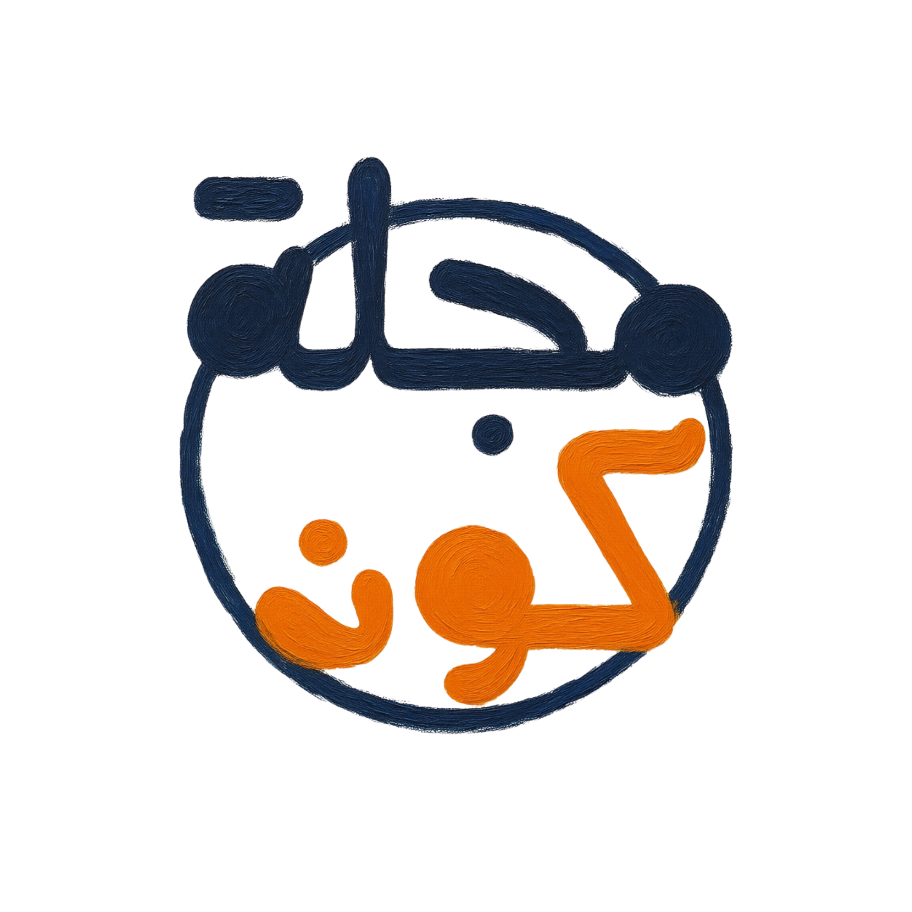

محمد رمضان السيد
كاتب مقالة. مراجع أدبي. مؤسس ومدير مشروع ثقافي.
أكتب لأكون واضحًا، وأراجع لأحافظ على صوت الكاتب، وأبني مشروعًا ثقافيًا يؤمن بأن الكتابة الجادة تستحق جمهورًا.
نبذة
كاتب مصري بدأ الكتابة عام 2018، ويعمل في المقالة الفلسفية والأدبية والفكرية، والمراجعة الأدبية، والإدارة الثقافية، وصناعة المحتوى.
أسس «كون» في 23 مارس 2024، وأدار تطورها من مشروع كتابي إلى منظومة ثقافية رقمية تضم مجلة إلكترونية، وموقعًا لنشر المقالات، وفريقًا من الكتاب والعاملين في المحتوى، ومنصات رقمية ذات حضور واسع.
المجالات المهنية
- الكتابة: المقالة الفلسفية والأدبية والفكرية، الرواية والقصة القصيرة، الكتابة الثقافية.
- المراجعة الأدبية: تقييم ومراجعة الروايات والكتب والمقالات، دراسة البناء والأسلوب والحبكة والإيقاع والوحدة الموضوعية، مراجعة فنية تحافظ على صوت الكاتب وهويته.
- الإدارة الثقافية: إدارة فرق الكتاب، التخطيط والتحرير والنشر، تقييم وتدريب الكتاب، بناء أنظمة العمل التحريري.
- صناعة المحتوى: الاستراتيجية التحريرية، المحتوى الأدبي والثقافي، إدارة المجتمعات الرقمية، تحليل أداء المحتوى وتطويره.
الأعمال الأدبية
«المباركين»
رواية فلسفية منشورة ورقيًا عن دار مختلف للنشر والتوزيع. صدرت منها طبعتان كاملتان.
- إزميل سانتا كلوز
- سر الليل الطويل
- في الفن البشري
- اغتيال المثقف العجوز
- العدمية
- جذور الألسنة وتفرع اللغات
المراجعة الأدبية
أتعامل مع المراجعة بوصفها قراءة نقدية وتقييمًا فنيًا في المقام الأول، ولا أذهب إلى مدرسة التعديل في النصوص.
الحفاظ على صوت الكاتب أهم من فرض صوت المراجع.
محاور المراجعة
أعمال خضعت للمراجعة
«أكذوبة هرمون السعادة»
مقالة — العدد الثاني من مجلة كون
«شبح في لشبونة»
مقالة — فبراير 2026، موقع كون الإلكتروني
«النسوية الغربية وتأثيرها على الفكر النسوي العربي»
مقالة — مارس 2025، موقع كون الإلكتروني

مؤسسة ومشروع ثقافي مستقل
تأسست: 23 مارس 2024«كون» مشروع ثقافي يهدف إلى إعادة الاعتبار إلى فن المقالة، وإتاحة مساحة للكتابة الأدبية والفكرية والفلسفية بعيدًا عن القوالب الصحفية التقليدية.
المنظومة الثقافية
- مجلة إلكترونية
- موقع لنشر المقالات
- صفحة أدبية على Facebook
- فريق من الكتاب والعاملين في المحتوى
- برامج داخلية لتدريب وتطوير الكتاب
دوري في كون
المؤسس والمالك — المحرر — المراجع — المنسق — المدير
أدير دورة العمل التحريرية من استلام النصوص وتقييمها واتخاذ قرار النشر، وحتى المراجعة والتدقيق والنشر، إلى جانب إدارة الفريق وتدريب الكتاب.
الجمهور: عربي، مع حضور رئيسي في مصر والسودان والجزائر وسوريا وليبيا والمغرب، والفئة الأكبر عمرًا بين 18 و34 عامًا.
الإدارة الثقافية
أدير فريقًا متعدد الأدوار يضم الكتاب، والمراجعة والتدقيق، والتصميم، وإدارة الصفحات والمجتمعات.
- توزيع المهام وفق قدرات الأفراد
- تقييم الأداء والتدريب والتوجيه
- نظام داخلي لتقييم الكتاب
- دورة تحرير ومراجعة قبل النشر
- برامج تدريبية لاختيار وتطوير أعضاء جدد
صناعة المحتوى
أدير الاستراتيجية التحريرية لـ«أدبيات كون»، وأعمل على تطوير المحتوى الأدبي الموجه لجمهور عربي واسع.
ومن أبرز النتائج الرقمية للمشروع وصول الصفحة إلى مئات الملايين من المشاهدات، وتجاوز حاجز 750 ألف متابع، مع جمهور عربي واسع خارج مصر.
التعليم والتكوين
جامعة الأزهر
بكالوريوس — طالب مقيد
قسم المحاسبة وإدارة الأعمال والتأمين.
يعتمد تكويني الأدبي والمهني بدرجة كبيرة على القراءة المستمرة والدراسة الذاتية.
دورات ومحاضرات
- تاريخ الذكاء الاصطناعي
- فن المقالة
- تدريب الكتاب وتطوير مهارات الكتابة والمراجعة
لا أكتب لأكون محايدًا؛ أكتب لأكون واضحًا.
الحفاظ على صوت الكاتب أهم من فرض صوت المراجع.
الاستمرارية، والانضباط، والقراءة الواعية والدائمة، هي التي تجعل المشروع قادرًا على الاستمرار، والإنسان قادرًا على تقبل العيش.
الرؤية
أعمل على تطوير «كون» إلى مؤسسة ثقافية عربية أكثر اتساعًا، مع الحفاظ على جوهر المشروع: إحياء فن المقالة، ودعم الكتاب، وبناء جمهور يقرأ المحتوى الجاد.
وعلى المستوى الأدبي، أسعى إلى توسيع حضور أعمالي الروائية والمقالية عربيًا، وترجمة أعمالي مستقبلًا.